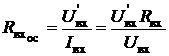
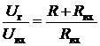

электронный ресурс по учебной дисциплине 1-58 01 01 - "Инженерно-психологическое обеспечение информационных технологий"
|
||
| Оглавление | Программа | Теория | Практика | Контроль знаний | Об авторах | ||
| Практика
ЛАБОРАТОРНАЯ РАБОТА № 5 Исследование многокаскадных усилителей с обратными связями 1. Цель работы 1. Изучить виды обратных связей (ОС) и их влияние на основные параметры и характеристики усилителей. 2. Определить влияние отрицательной обратной связи (ООС) на характеристики усилителей.
2. Краткие теоретические сведения
Многокаскадные усилители представляют собой последовательное соединение одиночных каскадов. Они используются для обеспечения требуемого коэффициента усиления. С целью изменения параметров и характеристик усилителя используются обратные связи. Обратной связью в усилителях называют передачу всего или части выходного сигнала во входную цепь усилителя. Цепь, по которой осуществляется передача сигнала ОС, называется цепью обратной связи. Петлей ОС называют замкнутый контур, включающий в себя цепь ОС и часть усилителя между точками ее подключения. Местной петлей ОС (местной ОС) называют ОС, охватывающую отдельные каскады или часть усилителя. Общая ОС охватывает весь усилитель. В зависимости от вида обратной связи, величины напряжения ОС, наличия или отсутствия в цепи обратной связи частотно-зависимых элементов (в полосе пропускания усилителя без ОС) определяется влияние обратной связи на параметры усилителя.
Рис. 1. Усилитель с обратной связью . Другим
прямоугольником обозначена цепь ОС, имеющая коэффициент передачи ,
где
Рис. 1 Коэффициент усиления усилителя и коэффициент передачи цепи ОС в общем случае являются величинами комплексными, учитывающими возможный фазовый сдвиг на низких и высоких частотах за счёт наличия в схемах реактивных элементов. При работе в диапазоне средних частот, если в цепи ОС отсутствуют реактивные элементы, параметры и являются вещественными величинами.
Рис. 2. Способы получения обратной связи По способу получения сигнала обратной связи различают: обратную связь по напряжению (рис. 2), когда сигнал обратной связи пропорционален выходному напряжению ; ОС по току (рис. 2), когда сигнал обратной связи пропорционален току исходной цепи ; комбинированную обратную связь (рис. 2), когда снимаемый сигнал ОС пропорционален как напряжению, так и току выходной цепи. По
способу подачи сигнала ОС на вход усилителя различают: последовательную
(рис. 3) - напряжение ОС Правило определения вида обратной связи: если при коротком замыкании нагрузки напряжение обратной связи сохраняется, то осуществляется обратная связь по току; если же оно стремится к нулю, то осуществляется обратная связь по напряжению.
Отрицательная обратная связь позволяет улучшить некоторые параметры усилителя, поэтому она нашла на практике преимущественное применение. Оценку влияния обратной связи на показатели усилителя рассмотрим на примере схемы с последовательной обратной связью по напряжению (см. рис. 3). Последовательная обратная связь по напряжению. На входе усилителя действует алгебраическое суммарное напряжение входного сигнала и напряжения ОС:
Рис. 3. Способы
получения обратной связи Напряжение на выходе усилителя, охваченного обратной связью, равно (2) Разделив обе части уравнения (1) на , получим (3)
Это соотношение, связывающее коэффициент усиления усилителя , охваченного обратной связью, и усилителя без обратной связи, является основным соотношением в теории усилителей с обратной связью. Величину характеризует усиление и характер петли обратной связи. Величину называют глубиной обратной связи. Глубина ОС показывает, во сколько раз изменится коэффициент усиления при введении в усилитель обратной связи. Поскольку в общем случае и , где и фазовые сдвиги напряжения сигнала, вносимые соответственно усилителем и звеном обратной связи, выражение (3) можно записать в виде: (4)
При , , т.е. коэффициент обратной связи есть величина вещественная и отрицательная: (5)
Таким образом, если сигнал обратной связи поступает на вход усилителя в противофазе со входным сигналом, то коэффициент усиления усилителя уменьшается в раз. Такую обратную связь называют отрицательной обратной связью (ООС). ООС ослабляет влияние всех изменений коэффициента усиления K, в том числе связанных с неравномерностью частотной характеристики; расширяет полосу пропускания как в сторону низких, так и в сторону высоких частот; уменьшает частотные искажения. ООС уменьшает возникающие в усилителе нелинейные искажения. Если при ООС ||>>1, то говорят, что усилитель охвачен глубокой отрицательной обратной связью: (6)
В этом случае коэффициент усиления усилителя определяется только коэффициентом передачи цепи обратной связи и не зависит от собственного коэффициента усиления усилителя К. Если величина вещественная и положительная, то сигнал обратной связи совпадает по фазе со входным сигналом, усилитель охвачен положительной обратной связью. Коэффициент усиления усилителя при этом возрастает в 1– раз. При =1 в усилителе возникают условия для самовозбуждения усилителя, охваченного положительной обратной связью. Такой режим работы нашел применение в генераторах напряжения. Сущность самовозбуждения заключается в следующем: любой малый входной сигнал, вызванный наводками или колебаниями параметров активных элементов, усиливается и возвращается обратно на вход усилителя. Суммируясь со входным сигналом, он вызывает появление большого входного сигнала. В реальных усилителях наступает ограничение выходного сигнала и появляются незатухающие колебания. Положительная обратная связь, увеличивающая коэффициент усиления, в электронных усилителях практически не применяется, так как при этом стабильность коэффициента усиления значительно ухудшается. Для качественной оценки действия цепи обратной связи определим стабильность коэффициента усиления усилителя с обратной связью. Для этой цели продифференцируем выражение (6): ,
тогда относительное изменение коэффициента усиления усилителя с отрицательной обратной связью определяется как: ,
откуда следует, что относительное изменение коэффициента усиления усилителя с отрицательной обратной связью в () раз меньше относительного изменения коэффициента усиления усилителя без обратной связи. При этом стабильность коэффициента усиления повышается с увеличением глубины обратной связи. Физический смысл повышения стабильности коэффициента усиления усилителя с отрицательной обратной связью заключается в том, что при изменении коэффициента усиления усилителя К изменяется напряжение обратной связи . Это приводит к изменению входного напряжения усилителя и препятствует изменению выходного напряжения. Стабильность коэффициента усиления усилителя при введении ООС широко используется для улучшения амплитудно-частотной характеристики усилителей переменного сигнала (рис. 4), при этом полоса пропускания усилителя Δf расширяется. Входное сопротивление усилителя с обратной связью определяется как: .
Используя соотношение , получим , т.е. входное сопротивление каскада при последовательной обратной связи по напряжению возрастает в раз, а положительная обратная связь уменьшает его в раз. Выходное сопротивление усилителя, охваченного обратной связью, определяется выражением: ,
Рис. 4 Выводы: последовательная ООС по входу увеличивает , а параллельная – уменьшает. ООС по напряжению уменьшает выходное сопротивление, а ООС по току – увеличивает.
3. Методические указания по выполнению лабораторной работы
Исследование амплитудной характеристики усилителя проводится на фиксированной частоте входного сигнала (f = 1 кГц) с использованием Программы компьютерного моделирование электронных схем Multisim (приборы: функциональный генератор сигналов (Function Generator), осциллограф (Oscilloscope)) согласно структурной схеме, которая представлена на рис. 5.
Рис. 5. Структурная схема измерительной установки
Исследование
амплитудно-частотной характеристики проводится при фиксированном
уровне входного сигнала, выбранном на линейном участке АХ с
использованием измерительной установки, структурная схема которой представлена
на рис. 5. Для упрощения вычислений коэффициента усиления по напряжению
желательно выбрать круглое значение амплитуды напряжения входного сигнала.
Например: 1 мВ, 5 мВ, 10 мВ. Исследуемые усилительные каскады имеют полосу пропускания
в несколько декад (декада – изменение чего-либо в десять раз, в данном случае
частоты). Поэтому при построении графиков АЧХ необходимо по оси частот использовать
логарифмический масштаб. При снятии АЧХ в области средних частот, где коэффициент
усиления практически не изменяется, измерения необходимо проводить в
трех...пяти точках на каждую декаду. Например: 100, 300, 500, 700 Гц; 1,2, 3,
5, 7 кГц и т.д. Значения нижней и верхней граничных частот ( и )
необходимо определять по уменьшению коэффициента усиления в Измерение входного и выходного сопротивлений усилителя проводится на фиксированной частоте входного сигнала (f = 1 кГц) при уровне входного сигнала, соответствующем линейному участку АХ. Измерительная установка собирается согласно структурной схеме, представленной на рис. 6.
Рис. 6. Измерительная установка для вычисления входного и выходного напряжений
Входное сопротивление измеряется косвенным методом. Добавочный резистор R на входе усилителя и входное сопротивление усилительного каскада образуют делитель напряжения, для которого можно записать: , где – напряжение на выходе генератора низких частот (до резистора R); – напряжение непосредственно на входе усилителя. Необходимо измерить напряжения и , а входное сопротивление рассчитать но формуле: . Если усилителя велико и соизмеримо со входным сопротивлением вольтметра, измеряют выходное напряжение при наличии R и при его отсутствии . В этом случае входное сопротивление рассчитывается по формуле: . Выходное
сопротивление . Если (нагрузка отсутствует), то: .
4. Порядок выполнения работы
1. Исследовать влияние местной последовательной отрицательной обратной связи по току на основные характеристики и параметры двухкаскадного усилителя на биполярных транзисторах с ОЭ. 1.1. Собрать двухкаскадный усилитель по схеме, приведенной на рис. 2.7, используя следующие значения параметров элементов схемы: VT – КТ315Б, R1 = 9,1 кОм, R2 = 1,5 кОм, RК = 1 кОм, RЭ = 100 Ом, CP 1 = 10 мкФ, CP 2 = 4,7 мкФ, CЭ = 100 мкФ, RН = 1 кОм , R = 51 Ом, UИП = 10 В. Напряжение питания контролировать вольтметром постоянного тока - мультиметр (Multimeter).
Рис. 2.7. Схема двухкаскадного усилителя
1.2. Подключить измерительные приборы (генератор низкочастотных сигналов, осциллограф) согласно схеме на рис. 5. 1.3. Снять
АХ усилителя на частоте синусоидального входного сигнала f = 1
кГц для двух значений сопротивления нагрузки RН . Величину определять
поначалу видимых искажений (ограничению синусоиды) выходного сигнала 1.4. Снять АЧХ усилителя для двух значений сопротивления нагрузки при напряжении входного сигнала , соответствующем линейному участку АХ, измеренной в области средних частот (воспользоваться для определения значения результатами выполнения предыдущего пункта). Определить полосу пропускания усилителя. 1.5. Рассчитать
входное и
выходное 1.6. В первый усилительный каскад ввести местную последовательную отрицательную обратную связь по току. Для этого из схемы необходимо исключить конденсатор , шунтирующий резистор . 1.7. Снять
АХ усилителя на частоте синусоидального входного сигнала f = 1
кГц для двух значений сопротивления нагрузки .
Величину определять
по началу видимых искажений (ограничению синусоиды) выходного сигнала 1.8. Снять АЧХ усилителя для двух значений сопротивления нагрузки при напряжении входного сигнала , соответствующем линейному участку АХ, измеренной в области средних частот (воспользоваться для определения значения результатами выполнения предыдущего пункта). Определить полосу пропускания усилителя. Сравнить полученные результаты с результатами п. 1.4. 1.9. Рассчитать
входное и
выходное 2. Исследовать влияние общей последовательной отрицательной обратной связи по напряжению на основные характеристики и параметры двухкаскадного усилителя на биполярных транзисторах с ОЭ. 2.1 Собрать двухкаскадный усилитель с общей последовательной отрицательной обратной связью по напряжению по схеме, приведенной на рис. 8: VT – КТ315Б, R1 = 9,1 кОм, R2 = 1,5 кОм, RК = 1 кОм, RЭ = 100 Ом, Cр1 = 10 мкФ, Cр2 = 4,7 мкФ, Cр3 = 10 мкФ, CЭ = 100 мкФ, Rн = 1 кОм, R = 51 Ом, UИП = 10 В. Напряжение питания контролировать вольтметром постоянного тока - мультиметр (Multimeter). 2.2. Подключить измерительные приборы (генератор низкочастотных сигналов, осциллограф согласно схеме на рис. 5). 2.3. Снять
АХ усилителя на частоте синусоидального входного сигнала f = 1 кГц для двух значений сопротивления нагрузки .
Величину определять
поначалу видимых искажений (ограничению синусоиды) выходного сигнала
Рис. 8. Схема двухкаскадного усилителя с общей последовательной отрицательной обратной связью по напряжению
2.4. Снять АЧХ усилителя для двух значений сопротивления нагрузки при напряжении входного сигнала , соответствующем линейному участку АХ, измеренной в области средних частот (воспользоваться для определения значения результатами выполнения предыдущего пункта). Определить полосу пропускания усилителя. Сравнить полученные результаты с результатами п.1.8. 2.5. Измерить
входное и выходное 3. Исследовать влияние местной последовательной отрицательной обратной связи по току на основные характеристики и параметры трехкаскадного усилителя на биполярных транзисторах с ОЭ. 3.1. Собрать трехкаскадный усилитель по схеме, приведенной на рис. 9 VT – КТ315Б, R1 = 9,1 кОм, R2 = 1,5 кОм, RК = 1 кОм, RЭ = 100 Ом, Cр1 = 10 мкФ, Cр2 = 4,7 мкФ, Cр3 = 10 мкФ, Cр4 = 4,7 мкФ, CЭ = 100 мкФ, Rн = 1 кОм, R = 51 Ом, UИП = 10 В. Напряжение питания контролировать вольтметром постоянного тока - мультиметр (Multimeter). 3.2. Подключить измерительные приборы (генератор низкочастотных сигналов, осциллограф согласно схеме на рис. 5.). 3.3. Снять
АХ усилителя на частоте синусоидального входного сигнала f = 1 кГц для двух значений сопротивления нагрузки .
Величину определять
по началу видимых искажений (ограничению синусоиды) выходного сигнала
Рис. 9. Схема трехкаскадного усилителя
3.4. Снять АЧХ усилителя для двух значений сопротивления нагрузки при напряжении входного сигнала , соответствующем линейному участку АХ, измеренной в области средних частот (воспользоваться для определения значения результатами выполнения предыдущего пункта). Определить полосу пропускания усилителя. 3.5. Измерить
входное и
выходное 3.6. В первый и третий усилительный каскады ввести местную последовательную отрицательную обратную связь по току. Для этого из схемы необходимо исключить конденсаторы и , шунтирующие резисторы и . 3.7. Снять
АХ усилителя на частоте синусоидального входного сигнала f = 1 кГц для
двух значений сопротивления нагрузки .
Величину определять
по началу видимых искажений (ограничению синусоиды) выходного сигнала 3.8. Снять АЧХ усилителя для двух значений сопротивления нагрузки при напряжении входного сигнала , соответствующем линейному участку АХ, измеренной в области средних частот (воспользоваться для определения значения результатами выполнения предыдущего пункта). Определить полосу пропускания усилителя. Сравнить полученные результаты с результатами п.3.4. 3.9. Измерить
входное и
выходное 4. Исследовать влияние общей параллельной отрицательной обратной связи по напряжению па основные характеристики и параметры трехкаскадного усилителя на биполярных транзисторах с ОЭ. 4.1. Собрать трехкаскадный усилитель с общей параллельной отрицательной обратной связью по напряжению по схеме, приведенной на рис. 10. VT – КТ315Б, R1 = 9,1 кОм, R2 = 1,5 кОм, RК = 1 кОм, RЭ = 100 Ом, Cр = 10 мкФ, C2 = 4,7 мкФ, CЭ = 100 мкФ, , R = 51 Ом, Rос = 25 кОм, Cос = 10 мкФ, UИП = 10 В. Напряжение питания контролировать вольтметром постоянного тока - мультиметр (Multimeter).
Рис. 10. Схема трёхкаскадного усилителя с общей параллельной отрицательной обратной связью по напряжению
4.2. Подключить измерительные приборы (генератор низкочастотных сигналов, осциллограф) согласно схеме, приведённой на рис. 5. 4.3. Снять
АХ усилителя на частоте синусоидального входного сигнала f = 1 кГц для двух значений сопротивления нагрузки .
Величину определять
по началу видимых искажений (ограничению синусоиды) выходного сигнала 4.4. Снять АЧХ усилителя для двух значений сопротивления нагрузки при напряжении входного сигнала , соответствующем линейному участку АХ, измеренной в области средних частот (воспользоваться для определения значения результатами выполнения предыдущего пункта). Определить полосу пропускания усилителя. Сравнить полученные результаты с результатами п. 3.4. 4.5. Измерить
входное и
выходное 5. Исследовать влияние общей последовательной отрицательной обратной связи по току на основные характеристики и параметры трехкаскадного усилителя на биполярных транзисторах с ОЭ. 5.1. Собрать трехкаскадный усилитель с общей последовательной отрицательной обратной связью по току по схеме, приведенной на рис. 11. Установить номинальное напряжение питания усилителя = 10 В. Напряжение питания контролировать вольтметром постоянного тока - мультиметр (Multimeter). 5.2. Подключить измерительные приборы (генератор низкочастотных сигналов, осциллограф) согласно схеме, приведённой на рис. 5. 5.3. Снять
АХ усилителя на частоте синусоидального входного сигнала f = 1 кГц для двух значений сопротивления нагрузки .
Величину определять
по началу видимых искажений (ограничению синусоиды) выходного сигнала
Рис. 11. Схема трехкаскадного усилителя с общей последовательной отрицательной обратной связью по току 5.4. Снять АЧХ усилителя для двух значений сопротивления нагрузки при напряжении входного сигнала , соответствующем линейному участку АХ, измеренной в области средних частот (воспользоваться для определения значения результатами выполнения предыдущего пункта). Определить полосу пропускания усилителя. Сравнить полученные результаты с результатами п. 3.8. 5.5. Измерить входное и
выходное
5. Содержание отчета
1. Схемы измерительных установок. 2. Принципиальные схемы исследуемых усилителей. 3. Табличные и графические результаты исследования АХ каскадов. 4. Табличные и графические результаты исследования АЧХ каскадов. 5. Сводная таблица с результатами измерений входных и выходных сопротивлений каскадов. 6. Анализ полученных результатов: влияние сопротивления нагрузки, наличия местной и общей ОС на параметры и характеристики усилителей; сравнение входных и выходных сопротивлений исследованных каскадов.
6. Контрольные вопросы
1. Что такое обратная связь, и как она влияет на характеристики и параметры усилителя? 2. Что такое петля ОС, усиление петли связи (петлевое усиление), глубина ОС? 3. Чем отличаются местная и общая ОС, параллельная и последовательная ОС, отрицательная и положительная ОС, ОС по току и напряжению? 4. Как определить в практической схеме усилителя обратную связь по току и напряжению, параллельную и последовательную ОС? 5. Как
влияет параллельная ООС по напряжению на полосу пропускания, и 6. Как
влияет последовательная ООС по напряжению на полосу пропускания, и 7. Как
влияет местная последовательная ООС по току на полосу пропускания, и
|
| (С) БГУИР |